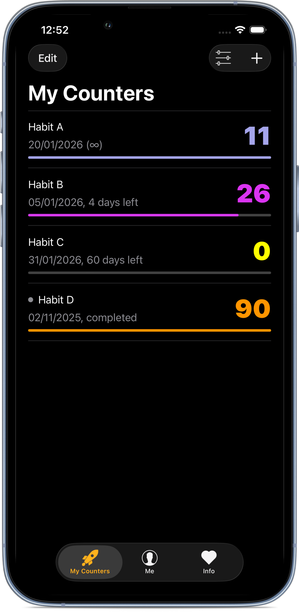

Break Free Tracker helps you track days free from habits you want to quit.
Create a counter for a behaviour you’re trying to stop and let it increase one day at a time. The app stays in the background, while you focus on your day.
Features
- Create multiple counters for different habits
- Set a goal for a counter, or let it run indefinitely
- Get notified when you reach a milestone
- Track your progress from the Lock Screen with widgets
- Add notes to counters and relapses
- Simple animations when a goal is reached
- Optional dark theme
Upgrade
The app is free to use and contains no ads.
An optional upgrade unlocks additional customizations:
- Customize counter colors
- Choose different completion animations